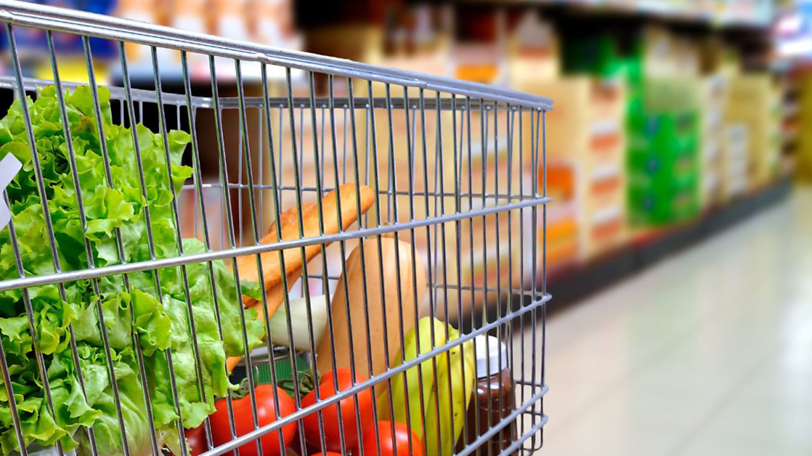

June 4, 2023
One of my favorite project, I harnessed the power of Python's Scrapy framework to carefully scrape
data from the renowned Steam website. With a deep passion for video games,
I extracted crucial information such as game titles, release dates, prices, discounted prices etc..
In this transformative project, I dived into the realm of healthcare analytics by leveraging SQL to analyze a
comprehensive dataset of insurance records. With a keen focus on variables such as age, smoking habits, medical history, and more,
I tried to uncover valuable insights and drive data-informed decision-making in the healthcare sector.

In this project, I jump on a comprehensive data analysis journey using Python, using a rich dataset from the supermarket domain.
This dataset contains a wide range of variables, including store branches, customer gender, gross income, COGS and more.
Using Python and data visualization techniques, I dig up valuable insights and visualized compelling patterns of retail world.
In this transformative project, I harnessed the power of Power BI to conduct a comprehensive data analysis using the Superstore dataset.
This dataset contains various informative variables, like order dates, regions, categories, sales figures and much more. Through the dynamic visualization
capabilities of Power BI, I crafted impactful visual representations of the retail landscape.
In this impactful project, I conducted a comprehensive data analysis using Microsoft Excel, focusing on a road accident dataset.
This dataset contains vital information, including accident severity, vehicle types involved, and more. Using Excel's pivot tables
and creating a dynamic dashboard, I uncovered critical insights and presented them in a visually engaging manner.